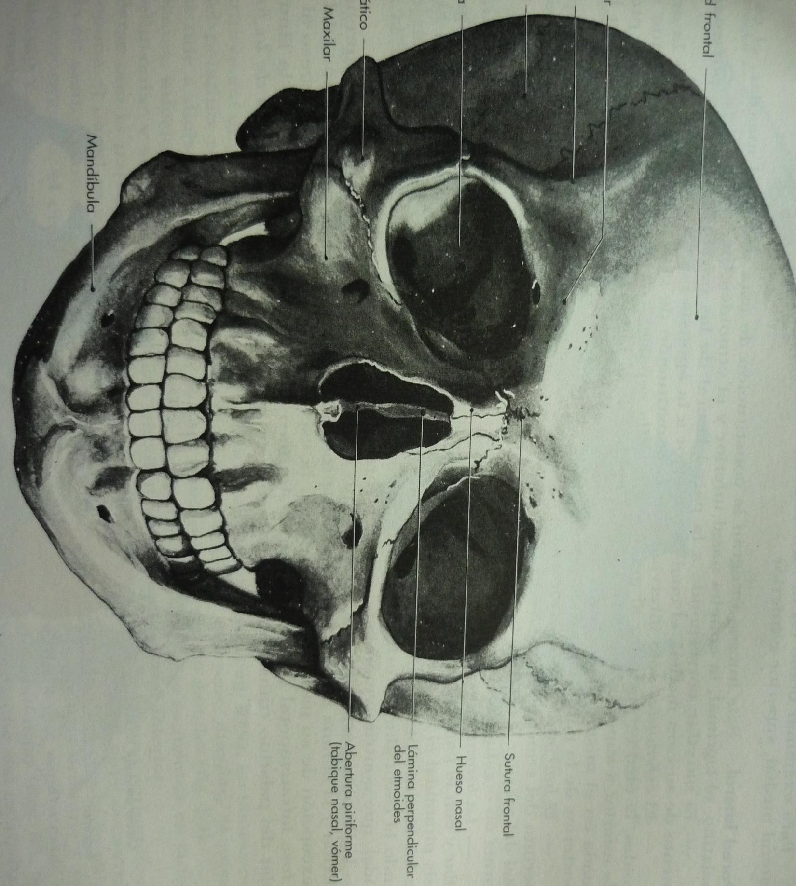
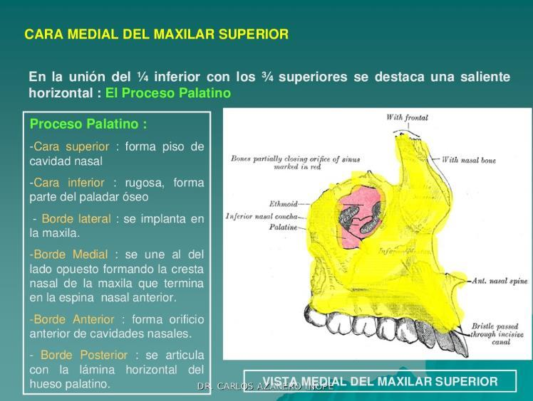
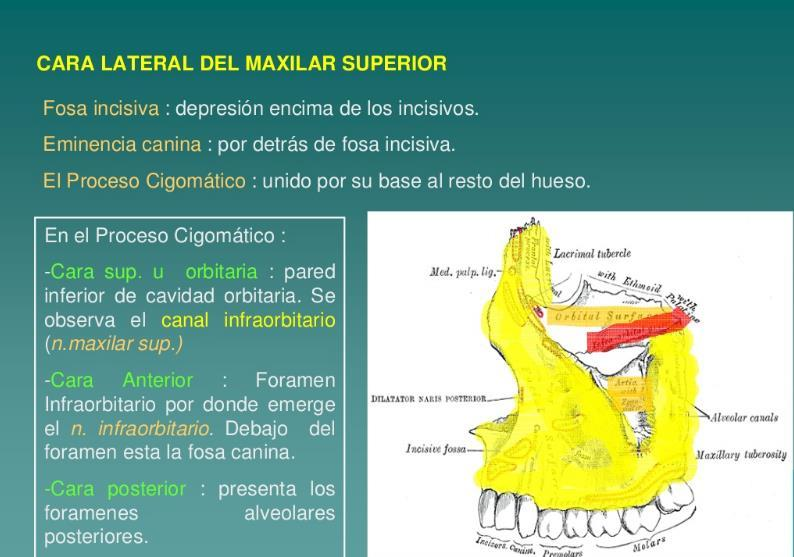
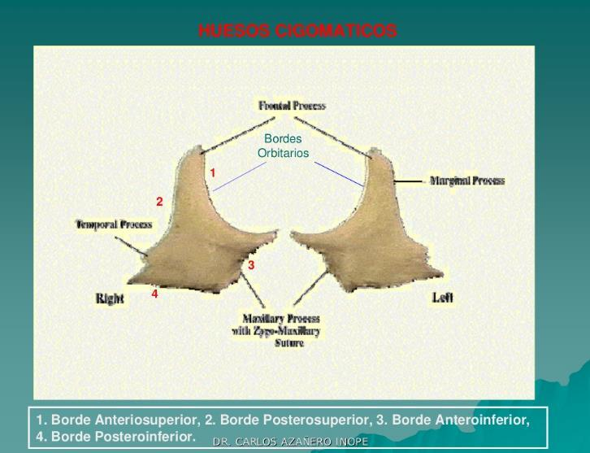
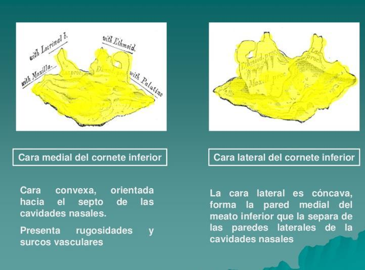
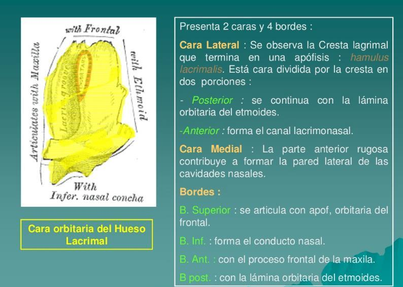
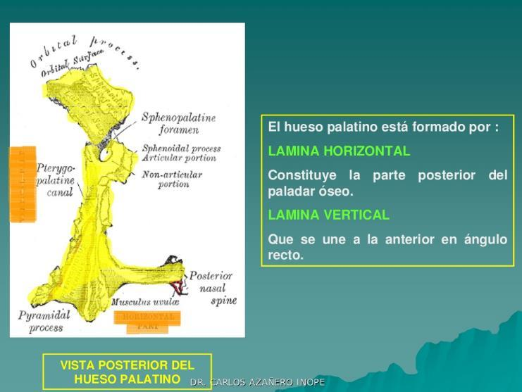
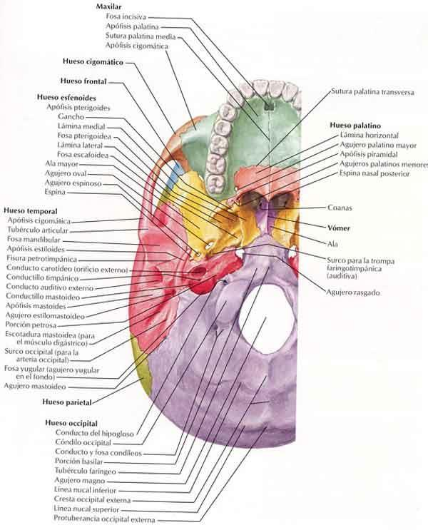
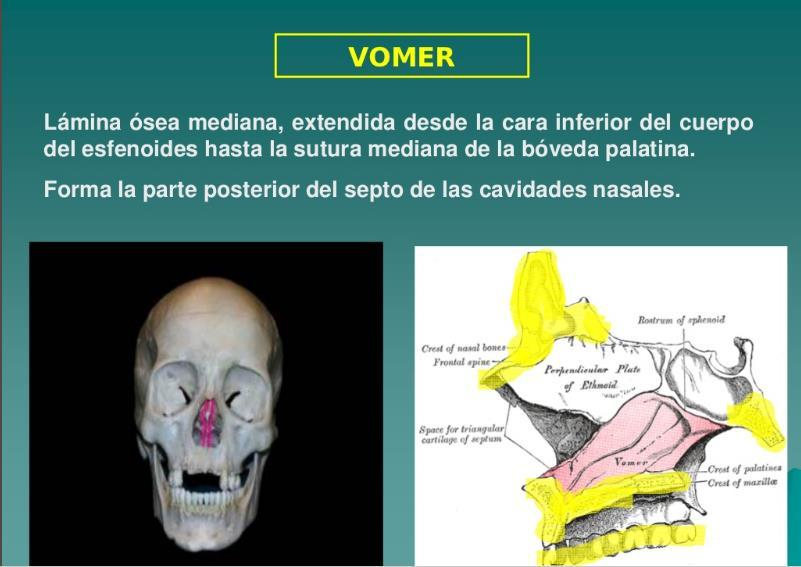
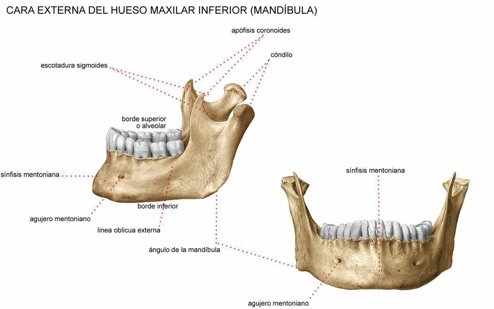

ClinicusMed · Dossiê Clinicus — Padrão de Excelência

| Categoria | Ossos |
|---|---|
| Pares (6) | Maxilar, Malar (Cigomático), Unguis (Lacrimal), Nasal, Cornete Inferior, Palatino |
| Ímpares (2) | Vômer, Mandíbula |


| Face | Estruturas encontradas |
|---|---|
| Interna | Apófise palatina (2/3 anterior da abóbada palatina), canal nasal, orifício do seio maxilar, apófise ascendente |
| Externa | Fossita mirtiforme, eminência canina, apófise ascendente, apófise piramidal (assoalho da órbita), canal suborbitário, semiespinha nasal inferior |

| Estrutura | Componentes |
|---|---|
| 4 Bordas | Anterossuperior, Posterossuperior, Anteroinferior, Posteroinferior |
| 4 Ângulos | Anterior, Superior, Posterior, Inferior |

| Estrutura | Detalhe |
|---|---|
| Borda Superior | Fixa-se na parede externa das fossas nasais; dela se desprendem a apófise lacrimal (ou nasal), a apófise maxilar (ou articular) e a apófise etmoidal |
| Borda Inferior | Livre |
| Extremo Anterior | Articula-se com o maxilar |
| Extremo Posterior | Articula-se com o palatino |

| Osso | Característica |
|---|---|
| Nasal | Par, pequeno, forma a ponte óssea do nariz (dorso nasal). Articula-se com o frontal, o processo frontal do maxilar, e o osso nasal contralateral |
| Vômer | Ímpar, forma a parte póstero-inferior do septo nasal ósseo. Lâmina fina e achatada |

| Estrutura | Detalhe |
|---|---|
| Borda Superior | Fixa-se na parede externa das fossas nasais; dela se desprendem a apófise lacrimal (ou nasal), a apófise maxilar (ou articular) e a apófise etmoidal |
| Borda Inferior | Livre |
| Extremo Anterior | Articula-se com o maxilar |
| Extremo Posterior | Articula-se com o palatino |

| Lâmina Horizontal | Detalhe |
|---|---|
| 2 Faces | Superior e Inferior |
| 4 Bordas | Interna, Externa, Anterior, Posterior |

| Lâmina Vertical | Detalhe |
|---|---|
| Face Interna | Forma parte da parede externa das fossas nasais; apresenta uma crista para o cornete inferior |
| Face Externa | 2 superfícies rugosas: Anterior (pra tuberosidade do maxilar) e Posterior (pra apófise pterigoide) |
| Borda Anterior | Estreita o seio maxilar |
| Borda Posterior | Articula-se com a parte interna da apófise pterigoide |
| Borda Inferior | Une-se ao lado oposto, formando a apófise piramidal do palatino |
| Borda Superior | Origina a apófise orbitária do palatino |

| Parte | Característica |
|---|---|
| Corpo | Porção horizontal em forma de "U", contém os alvéolos dentários inferiores |
| Ramo | Porção vertical, de cada lado, articula-se com o corpo no ângulo da mandíbula |
| Processo Condilar | Articula-se com o osso temporal, formando a Articulação Temporomandibular (ATM) |
| Processo Coronoide | Inserção do músculo temporal |
| Forame Mentual | Passagem do nervo mentual (ramo do nervo mandibular, V3) |
Vamos acompanhar um jovem que sofreu trauma facial durante uma partida de futebol, relacionando o caso à anatomia dos ossos da órbita. O caso evolui em 3 níveis — clica em cada um pra ver como as coisas vão se desenrolando.
A Clinicus selecionou este conteúdo para complementar seu estudo. Não substitui a leitura do resumo — o resumo ensina, o vídeo reforça.
Carregando recomendações...
O sistema guarda, no seu navegador, quais cards você já sabe bem e quais precisam voltar mais cedo — cada vez que você avalia um card, ele recalcula quando ele deve voltar.
10 questões, do mais básico ao mais puxado. Escolhe uma alternativa, depois clica em "Ver comentário completo" — vale a pena ler até quando você acerta, porque o comentário explica cada alternativa, não só a certa.
Todas as imagens desse capítulo, reunidas num só lugar pra revisão rápida.